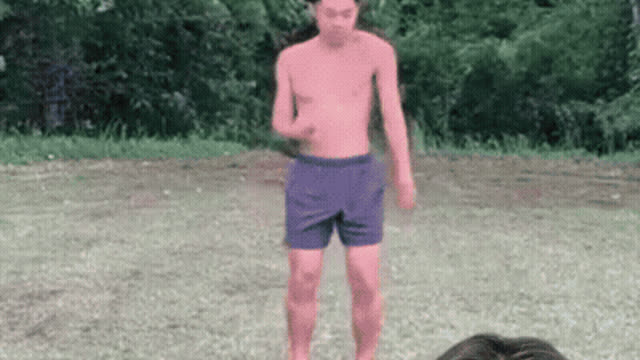
01Mobility~10-minute morning movement flow (Qi
A ~10-minute **morning movement flow** (Qi Gong / mobility style) the creator does right after waking: continuous rhythmic movement — arm swings and pendulums, torso waves, low squats, marches and hops, ending in standing meditation. He reports doing it 4–5 days straight and feeling "frickin' amazing" afterward. The whole thing is ~10 minutes with no breaks, 14–15 minutes with breaks.
Open guide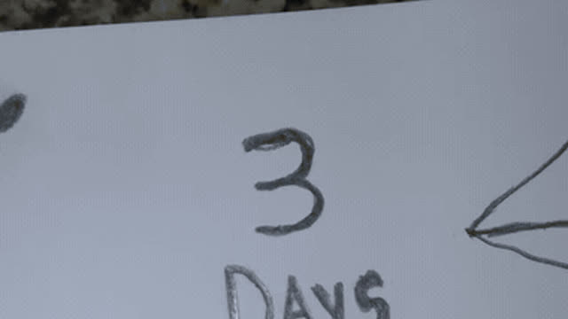
02Gym3-Day Summer Prep Dumbbell Blast
Large Dumbbells' 3-day dumbbell split for summer prep — focused push and pull pairings per day, minimal equipment, maximum density.
Open guide3-Hour/Week Strength & Shred Blueprint
🎬 **Reel Digest: 3-Hour/Week Strength & Shred Blueprint** (`DcBwgfsR1lt`)
Open guideThe 5 Best Core Workouts
Evidence-based mat core circuit: forearm plank, side plank, bird dog, dead bug, McGill curl-up. Just a mat.
Open guide** Abs circuit
1. **Knees to chest** ("ברכיים לחזה") — seated lean on hands, knees in/out
Open guide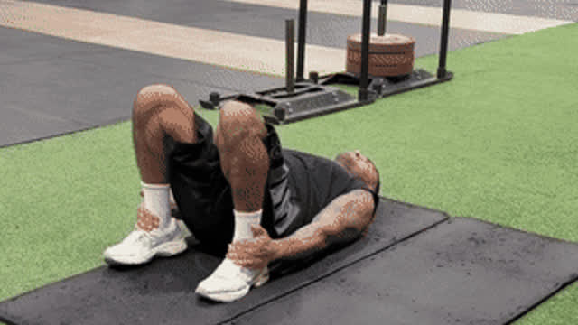
06MobilityAnkle-Grip Mobility — 10-Move Progression
10 mobility moves on one connective cue — grip the ankles and drive joints through end range: rocks, roller bridges, cone clearances, hero pose, bridge finisher. From @garcia_effect_official.
Open guideAPT (Anterior Pelvic Tilt) Fix — @anonymous
Self-contained workout guide with in-page GIFs.
Open guideDumbbell Shoulder Circuit — @anonymous
Self-contained workout guide with in-page GIFs.
Open guideFix Bunions Without Surgery — @anonymous
Self-contained workout guide with in-page GIFs.
Open guideFoot & Ankle Mobility Routine — @anonymous
Self-contained workout guide with in-page GIFs.
Open guideSingle-Leg Knee Stability — @anonymous
Self-contained workout guide with in-page GIFs.
Open guide> Are kettlebells right for you? I dont know
> "Are kettlebells right for you? I don't know. Let's figure it out."
Open guide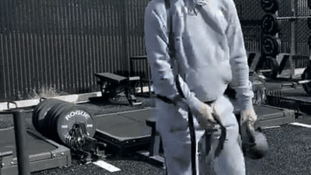
13MobilityAyo five minute routine to open
Ayo five minute routine to open your hips and protect your knees in a squad. Let's go traditional 90 90s Internally rotated 90 90s and externally rotated 90 90s. Y'all know I love them squad discovery stretch hammies Explore a deep range of motion Open up T-spine take them hamstrings back on that right bring it back down and open up a deep range of motion Play around discover discover you guys ban
Open guide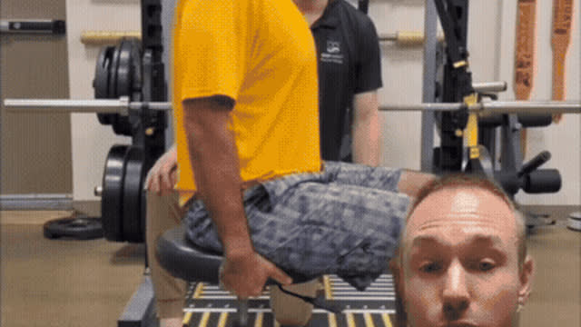
14RehabBack Pain Assessment & Fix — Hinge + Windmill (Squat University)
Follow the assessment order exactly — the movements are diagnostic. If a position hurts, stop and fix that link before moving on. Run the 3 drills as shown, daily if needed.
Open guide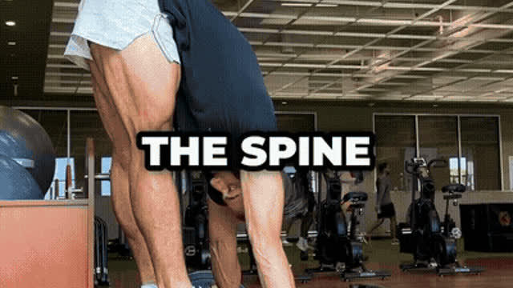
15MobilityBack-Pain Recovery — "Confront Your Weak Points"
🎬 **Reel Digest: Back-Pain Recovery — "Confront Your Weak Points"** (`DbpL8zQJZ4g`)
Open guideBand Full-Body — Home Session (No Gym)
No-gym fallback session with bands and a bosu: band goblet squat, bent-over row, swing, rotational high pull, thruster, bosu plank rollout — plus band-anchoring safety.
Open guideCalisthenics Basics — Pull-Ups & Dips, No Weights
Excuse me, I have a TikTok and I see people who are in really good shape what they do for their workouts. Do you mind if I ask you? You're ripped. Well, I don't do weights. It's calisthenics. Pull ups. Pull ups. Dips. Push ups. And keep going. How many miles do you walk a day? We're doing this. Oh my God. I'm probably like 60 miles. Really? Yes. How many pubs can you do? Oh my God. Honestly, two r
Open guide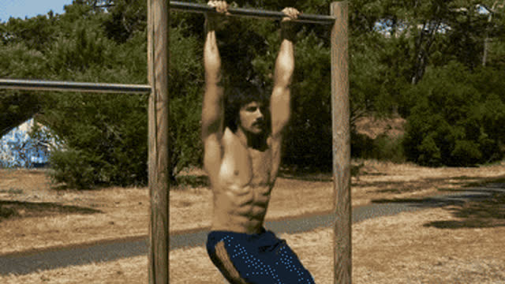
18CoreCalisthenics Core Foundations
The basics that actually build a core: dead hang, hanging knee raise, ledge body lever, floor L-sit leg raise — then the front lever they lead to. From @antoine.calisthenics.
Open guide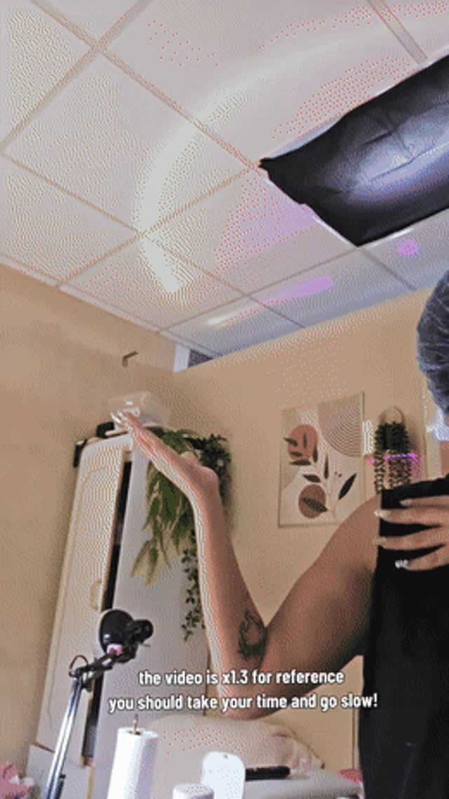
19MobilityCarpal Tunnel Prevention — 4 Wrist & Nerve Stretches
Anti-carpal-tunnel routine from a working nail tech (@mai.nailsdone): wrist extension, wrist-flexion 'Egyptians', nerve-flossing arm twist, finger hooks. 10 slow reps each, ~3 min — salon- and desk-friendly.
Open guide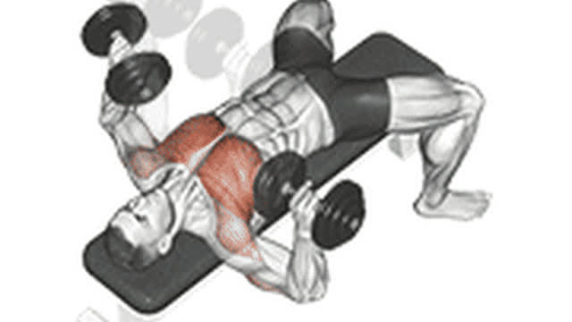
20Gym30-Min Gym Upper Body — Chest · Lats · Shoulders
7-exercise, 3-block gym session: DB bench press, push-up, cable pulldown, bent-over row, overhead press, lateral raise, biceps curl.
Open guide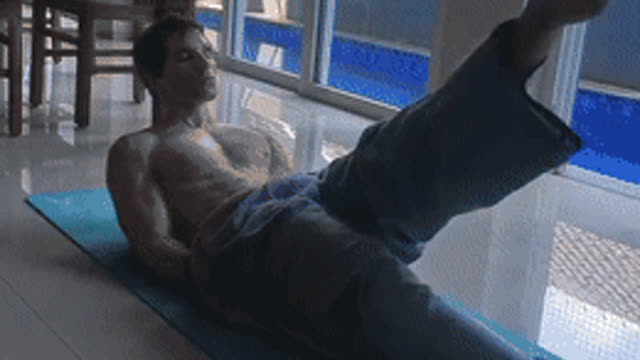
21CoreCore Circuit — Boat · Hollow · Crunch · Reverse Crunch · Plank
33-second bodyweight core circuit from session footage: tucked-boat to hollow flow, crunches, reverse crunches, forearm plank — kneel, reset, repeat for rounds. Mat optional.
Open guideCore Circuit — Tucks · Climbers · Stretch
3 bodyweight moves on a mat — seated knee tucks for lower abs, mountain climbers for dynamic core + hip flexors, standing neck/chest stretch to close. From Guy's session footage.
Open guide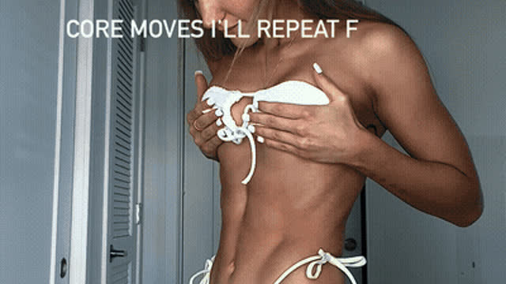
23Core** Core foundation
Here are the core movements that I will always keep in my training.
Open guide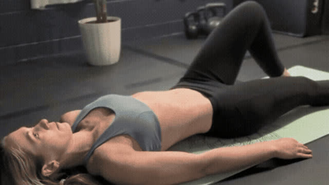
24CoreCurl-Up With TVA Breathing (Core Setup)
Proper curl-up setup that protects the low back and trains the TVA: hands under the lumbar curve, neutral spine braced into the hands, exhale as the core pulls in and up ("snug jacket"), exhale 5–8 s — less is more, no crunching.
Open guide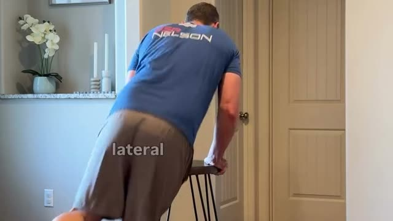
25LegsDaily Leg Strength & Balance — No Equipment
Dr. Jonathan Schutza's (PT) daily no-equipment leg routine: 20 wall deep squats, 30 wall calf raises, 20 chair-assisted single-leg lateral hops per leg, 20 heel-elevated split squats per side. Strength + balance + coordination, ~5 min, wall and chair only.
Open guide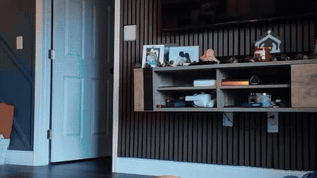
26MobilityDanny breaks down the complete 7-Stage
Danny breaks down the complete **7-Stage Stomach Vacuum (Transverse Abdominis / TVA) Progression**.
Open guide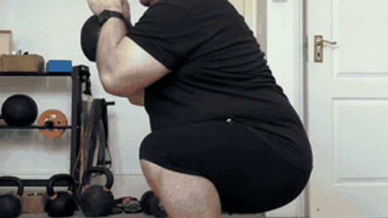
27MobilityDeep Squat Mobility Workout
13-station deep squat routine to open hips, ankles and trunk. From @cali.hoss — no equipment needed.
Open guide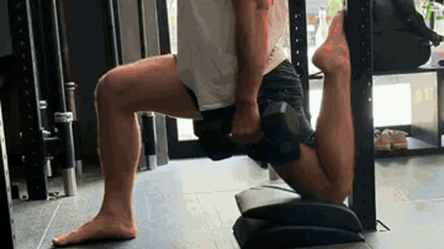
28Mobility4 Counter-Exercises for Desk Workers
Hip flexor stretch, TVA brace, lower trap Y-raise, shoulder external rotation — each with beginner→advanced progressions. From @skylerfelt.
Open guide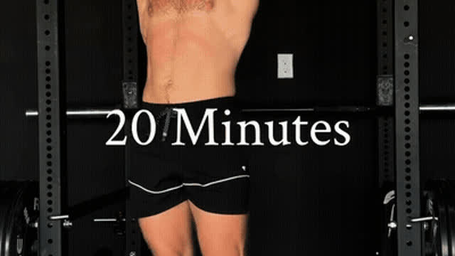
29Upper BodyDumbbell Dad Bod Demolisher
A 20-minute dumbbell circuit workout called "Dad Bod Demolisher" that targets full-body strength through high-intensity intervals.
Open guide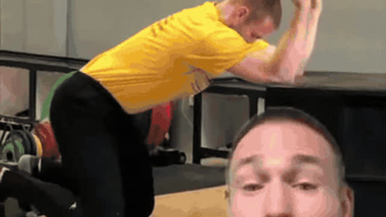
30MobilityElbows-on-Box Stretch: Thoracic vs Lat
One setup, two targets — drop the chest for the thoracic mid-back, or elbows in a V + round the back to hit tight lats. 5 deep breaths each.
Open guide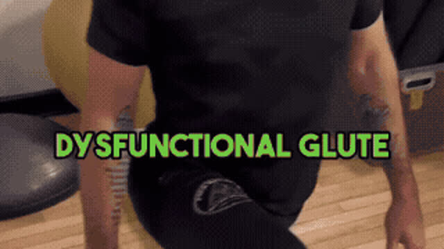
31HipsExtreme Isometric Glute Minimus Re-Pattern
J. Schroder-style long-duration isometric lunge holds (60-90s per side) to stop TFL/quad/hip-flexor compensation and re-pattern a dysfunctional glute minimus. Nervous-system work, not strength work. From Guy's saved reel.
Open guide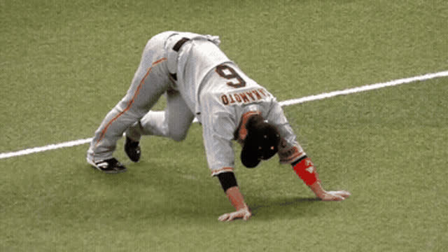
32MobilityField Mobility — Down-Dog Pike & Pigeon Pose
A Yomiuri Giants player's pre-work field routine: downward-dog pike for the posterior chain (hamstrings, calves, shoulders), pigeon pose for glutes and hip flexors. No equipment, 2-3 min. From @kenzo_kenko1.
Open guide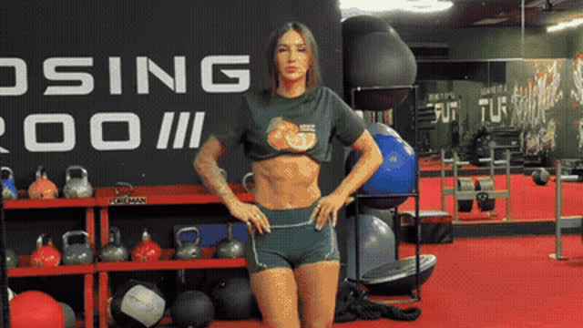
33Mobility** Finger/hand conditioning for musicians
Well, I'm a musician and a finger fit the sex part and I came up with the way to condition
Open guideFive Upper-Body Exercises for Size
Let me guess, your brains and hyperdrive trying to fit in the 5,000 exercises you've seen on your feet into your gym routine. I'm here to tell you that using these five upper body exercises alone, you'll be a big muscular meatball in no time. Let's start with chest. The only exercise you need is the incline dumbbell bench. Bigger stretch from dumbbells and incline to make sure the upper chest is f
Open guide** fix anterior pelvic tilt
1. Stand with back to wall — heels, hips, shoulder blades touching.
Open guide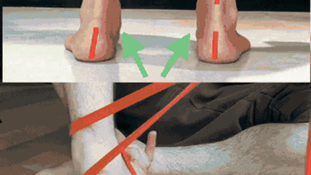
36RehabFlat Feet & Over-Pronation — Banded Offset Calf Raise
One band, one drill: wrap the heel, anchor under the far foot, then offset calf raise against the pull to train hindfoot inversion/supination. Plus the first-metatarsal and toe-splay cues that make it work. From @eb__dpt.
Open guide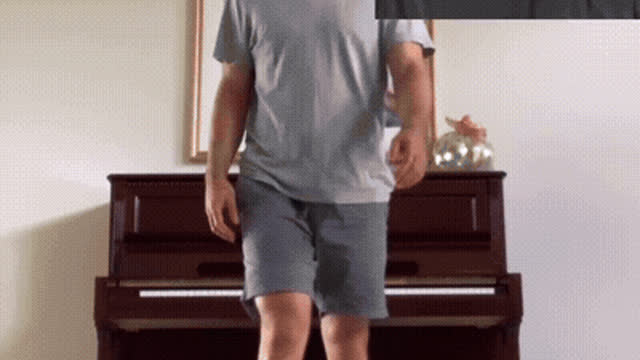
37MobilityHeel Flick Away + Hip Stretch Rocker Pulse — Recode Your Gait
When you walk, the heel should flick AWAY from the body as the foot leaves the ground — the pattern you see in elite athletes (Michael Jordan, Ed Reed) and models (Kate Moss, Chico Vakowski). Most people do the opposite: the heel turns IN, dragging behind the body. You can't force the heel flick; it comes from space in the foot, ankle, hip and the whole body. The hip stretch rocker pulse creates t
Open guide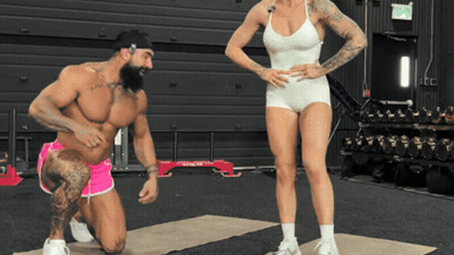
38CoreGive me your most advanced core workout
"Give me your most advanced core workout" — a no-equipment **5-exercise core finisher circuit** delivered as a fast-paced challenge. Zero rest between moves, minimal setup (floor only). Designed to be repeated as a **daily morning routine on a fasted/empty stomach** for a tighter waistline.
Open guide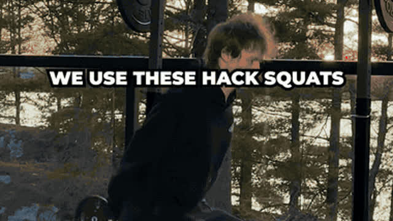
39RehabHackenschmidt Bulletproof Knee
Running Ability's George Hackenschmidt-inspired knee bulletproofing: legacy strength drills for tendon resilience and stable knees.
Open guideHeres how you go from walking like the top G to MJ
Here's how you go from walking like the top G to MJ. Right here is a classic case of overpronation, which can be cared by lengthening and strengthening your hips. The best place to start is with pigeon glute glides. Do eight reps each side two to three times per week. Follow these up with a sideline lift and twist to strengthen your hip muscles right where they're weak. 10 reps each side two to th
Open guide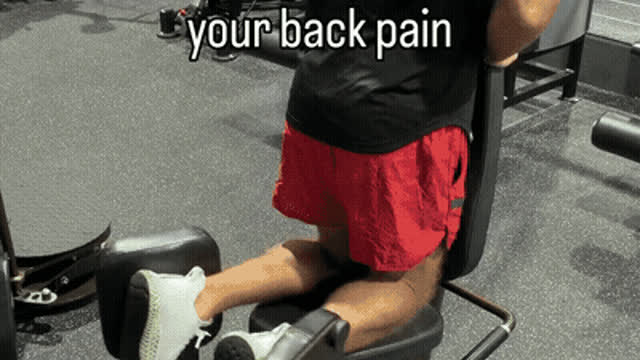
41RehabFix Back Pain — Hip Capsule Machines Done Right
The machines aren't the problem — how you use them is. Load your hip rotators on the hip-rotator machine, then use the leg press to strengthen the hip capsule's ability to rotate internally. Stronger hip capsules mean less back compensation.
Open guide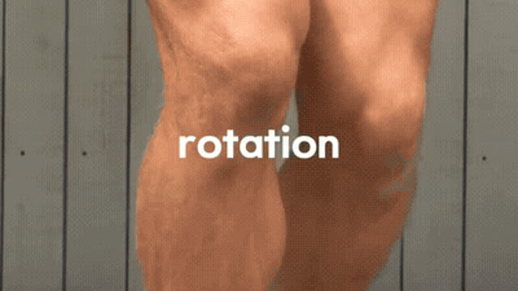
42MobilityHip Internal Rotation — Fix Flat Feet & Knee Cave
Flat feet and knee cave often start at the hips — a hip joint that lacks internal rotation makes the body spin the whole leg outward, and the knees/arches/feet pay the price. Fix the rotation with these 2 drills: seated hip CARs (3×8 each side, slow) and frog-squat hip internal rotation (3×6 each side, hold 2s).
Open guide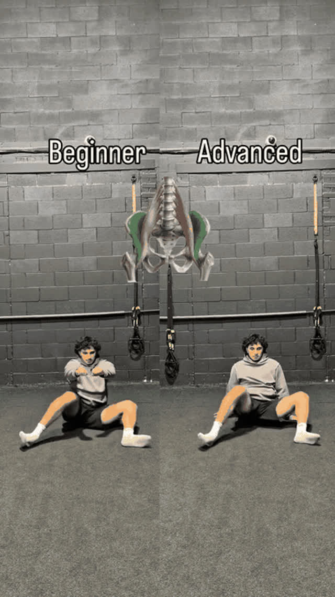
43RehabHip Strength for Runners
Zhamedi Performance's runner-focused hip strength pair — glute med and deep hip work to keep knees tracking and strides stable.
Open guideI lost over 45 pounds and whenever I cant make it to the gym
I lost over 45 pounds and whenever I can't make it to the gym, this is my at home at workout. First, we're going to get into the V-rays. You got three sets of 15 to 20. Make sure you're pushing yourself. Don't just do 15. Then you're going to get into these suitcases. You got another set of three sets of 15 to 20. Then we got cross-overs. You got three sets of a minute to a minute and 30. After th
Open guide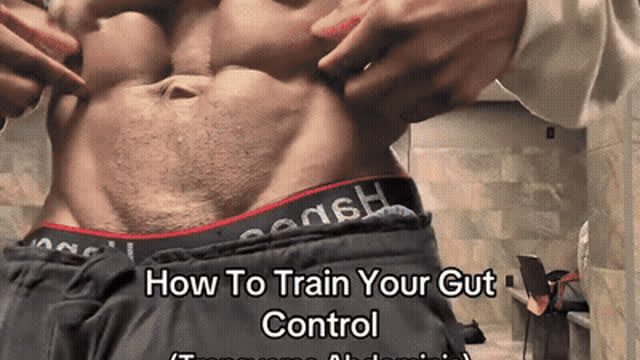
45CoreI preach a lot about how to train the visible part of your abs
I preach a lot about how to train the visible part of your abs, which is the rectus abdominis. But I never really talk about how to train the part that you don't see, which arguably could be more important than the visible part, and this is the transverse abdominis. Your transverse abdominis is the deepest part of your core muscle. It's essentially a core set that wraps around your abdomen and hel
Open guideI went from these to these
I went from these to these in three months to come up with a solution to see my abs workout for team. My routine is extremely simple. I just want to exercise. I stop wasting my time thinking of Pilates or 10 exercise, abs circuit will are going to do anything for my abs. Your abs is a muscle just like any other, they grow with progressive overload and over time. So in the gym, only one exercise le
Open guide> I will die on the hill
> "I will die on the hill — this is the number one method to achieve a lean aesthetic lifestyle."
Open guide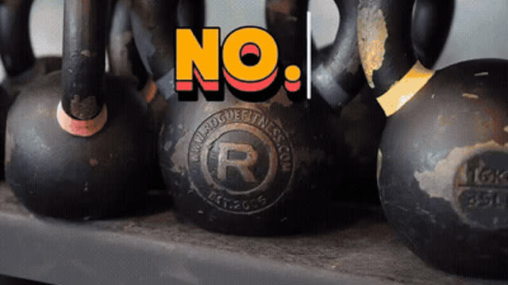
48MobilityIf I told you that
What if I told you that the number one strength issue that's gonna make aging absolutely suck is having weak and achy knees. So if you wanna keep hiking, squatting, and running pain free, then start doing this 15 minute knee strengthening routine. First, start with a wall sit heel raise. This is like injecting steroids into your patellar tendon without any of the nasty side effects. Shoot for 45 s
Open guideIf you think five minutes is
If you think five minutes is not enough for a full-body mobility routine, you're about to be pleasantly surprised. If you do 30 seconds of horse stance pulses, 30 seconds of elephant walks, 30 seconds of long-launch pulses on each side, 30 seconds of 1990 rotations, 30 seconds of toe sits, 30 seconds thoracic rotations on each side, of course, 30 seconds of superman back extensions, 30 seconds of
Open guideIf you want big biceps
If you want big biceps, here's a bicep workout that I haven't only told many people, but I've done it since the first day I started lifting. I just call them sets of five. I kind of made it up. What you do, your curl is supinated. You're gonna do five curls with one arm. Three, four, five. I'm going fast for the video. Now you're doing the other arm. Five, four, three, two, and you're holding whil
Open guide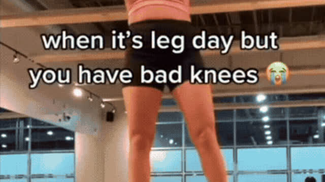
51Legs & KneesIf youre tired of having bad knees
If you're tired of having bad knees, there's one exercise you need to have in your weekly training. It's not back squats, even though squats are for everyone, and these are great for people if done correctly. And it's not isolated quad strengthening, although strength is an important quality to have. You see when people come to me with knee troubles, I screen their single leg squat. I'm not lookin
Open guide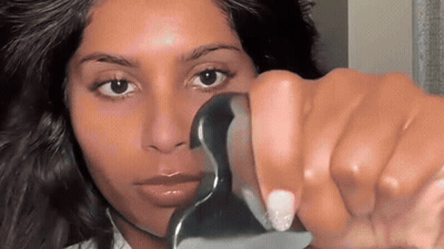
52MobilityIf youre too poor to afford a Terahertz Glashop
If you're too poor to afford a Terahertz Glashop, I'm going to show you how to do a simple Glashop routine that's going to help fight aging, help fight inflammation, sculpt your face using God's Glashop, your two fingers, all right? Very simple. You get yourself some black sea oil or whatever lubricant you want of your choice. You rub it not only on your fingers, but on your face and your neck as
Open guide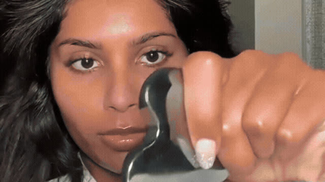
53MobilityIf youre too poor to afford a Terahertz Glashot
If you're too poor to afford a Terahertz Glashot, I'm gonna show you how to do a simple Glashot routine that's gonna help fight aging, help fight inflammation, sculpt your face using God's Glashot, your two fingers, all right? Very simple, you get yourself some Black Sea oil or whatever looper can you want of your choice. You rub it not only on your fingers, but on your face and your neck as well.
Open guide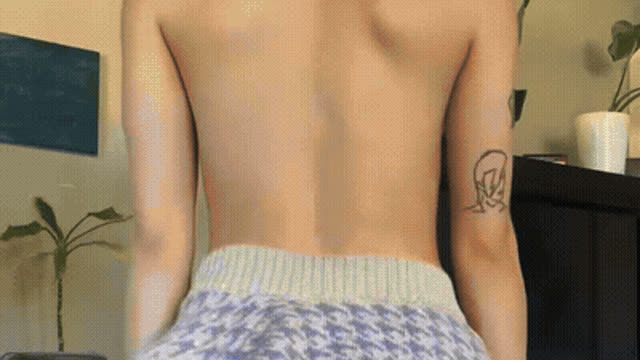
54Upper BodyIm going to show you how I fix my shoulders from this to this
I'm going to show you how I fix my shoulders from this to this. First you need to understand two motions of the shoulder blade. Abduction. Fear spine is your midline. Move your shoulder blade away from the midline. Don't include your torso. Protraction. Move your shoulder blade forward and around. Let's say this is bad posture. This is good posture. And your shoulder blade to the side. Bad posture
Open guideIm going to show you some
I'm going to show you some of my favorite knee exercises for rehab and training purposes. Try these progressions. Split squats, tempo split squat, tempo front foot elevated split squat, then add weight over time. Sliders, double leg eccentric, double leg, single leg eccentric, single leg side planks, short side plank, side plank, side plank hip abduction, heel raises, double leg, single leg, defic
Open guide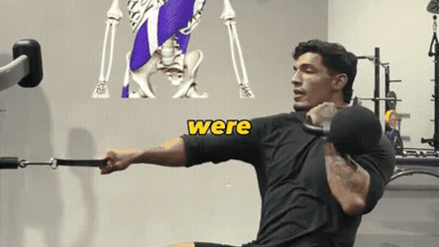
56CoreInterior Oblique Sling — Kinetic Chain in 2-3 Sets
If you understood how the body is designed, you'd stop overdoing heavy lifting and start stimulating the interior oblique sling. Heavy lifting is fine — but you only need 2-3 quality sets. Train the kinetic chain (foot → hip → torso → shoulder) as a connected sequence, and you build a body that looks good AND performs, without the joint aches and stiff lower back.
Open guideJawline & Lymph — Fix the Double Chin
Double chin, not defined jawline, swelling in your jaw, also tells about stagnant lymph. And no matter if you have skin face or you have oval face, no matter. We need to work with our neck. And I will share with you three super effective exercises without touching your face, you will be able to flush that lymph. Let's start it. Every exercise repeat 7-10 times. Shoulders down, head up. Like somebo
Open guide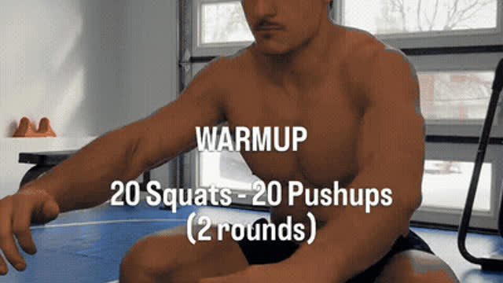
58GymJoe Rogan's Kettlebell Workout — Full Body, One Bell
The Joe Rogan kettlebell workout: 2 rounds of 20 squats + 20 pushups to warm up, then 3 rounds of swings, presses, windmills, and renegade rows — 10 reps per side, one bell.
Open guideKettlebell Overhead Press — Elbow Forward, Control the Bell
No control if the elbow flares out — the kettlebell can fall inward. Set up with the elbows on the rib cage, a straight wrist, hand on the center line, and the thumb pointing toward you. Press overhead with the elbow pointing FORWARD on the way up and on the way down: elbow forward means the kettlebell goes OUT, elbow out means the kettlebell comes IN. Finish with a moment of stillness at the top
Open guideKettlebell Swing Towel Trick — Pavel's Instant-Feedback Drill
The towel trick — from master kettlebell instructor Pavel — gives instant feedback that teaches proper kettlebell swing technique in minutes. If you lift with your arms instead of hinging, the bell twists and drops. Set up like a deadlift, grab the towel close to the handle, keep the arms long and relaxed, and move the bell with your hips — not your arms.
Open guide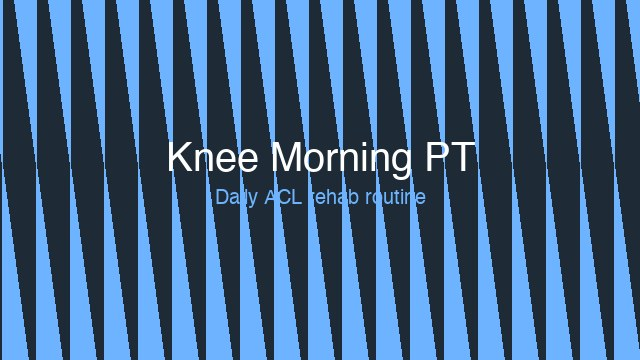
61RehabKnee Morning PT — Daily ACL Rehab Routine
~15 min daily block: backwards walking, wall-sit ball squeeze, ball-behind-knee extension, VMO band work, floor drills, stair/landing triads.
Open guideKnee Pain — 3 Causes & 3 Fixes
If your knees hurt more than they used to, it isn't age — it's one of three mechanical causes: a weak VMO, a weak glute medius, or stiff ankles. Three causes, three specific drills, all fixable. From @thekneedoctor (Instagram reel DdU8LMSua07).
Open guide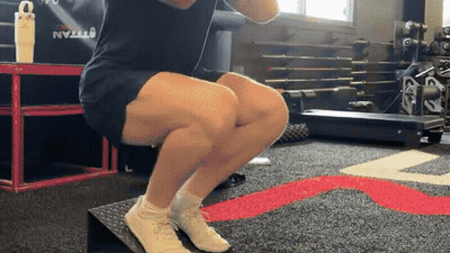
63Legs & KneesKnee Pain Part 3 — Effective Strength Training
The strength block of the knee-pain series, in the reel's own order: squat pattern, knee extension, posterior chain — then two bonus lifts.
Open guide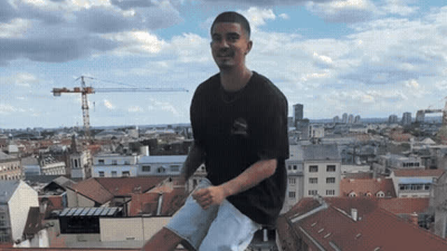
64RehabKnee Rebuild After ACL Tears — 4-Phase Program
A knee-rebuild program that rebuilt the creator's knees after 3 ACL tears — organized into four phases: Isometric → Loading → Strength → Plyometrics, with four exercises each. Progress through the phases in order; each sequence primes the next.
Open guide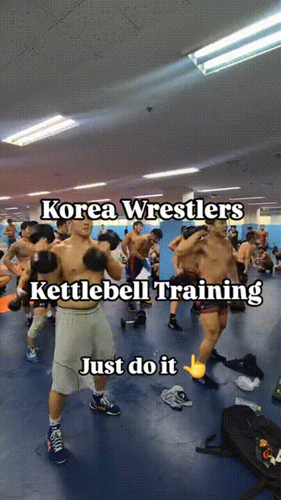
65GymKorea Wrestlers Kettlebell Training — 4 Exercises
Traditional Korean wrestling kettlebell conditioning: swings, cleans, front rack squats and presses — full-body power built on heavy KB fundamentals.
Open guideLenny's Morning Mobility Flow — Hip & Back Health
Lenny's 'I lost all my mobility' morning routine: deep squat for hip/knee health, leg raises for hip mobility, hip dips for spine mobility, daily maintenance for lower back.
Open guide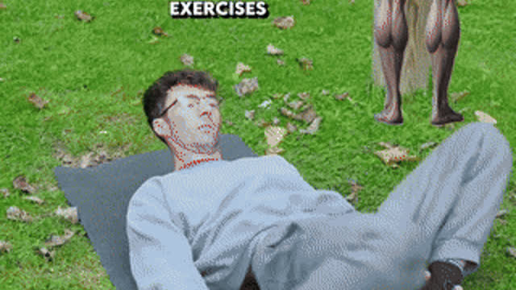
67MobilityLower Back — 4 Exercises, Not More Stretches
Windshield wipers, ankle-grip glute bridge, wide-stance glute bridge, straight leg raise — bodyweight lower-back strengthening over passive stretching. From @lennycalisthenics.
Open guide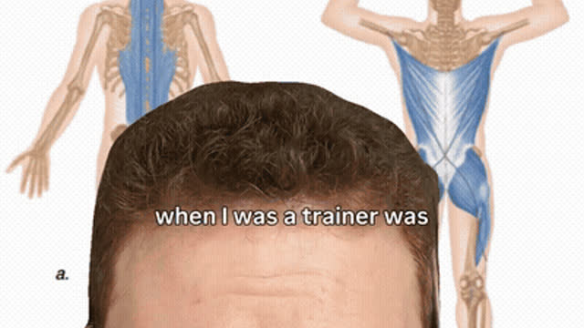
68Rehab** Lower back / posterior chain training
Fitness-advice reel (trainer talking to camera, gym setting). Information is anecdotal/self-reported; no citations. Marked for the Workouts collection.
Open guide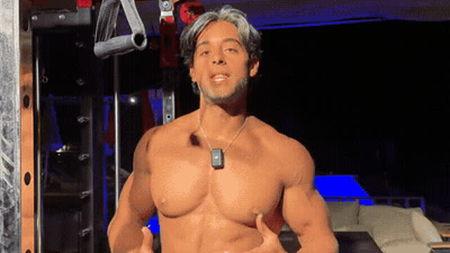
69GymLower-Chest "Dog Pounds" (Cable Mind-Muscle Connection)
A cable-based drill ("dog pounds") to build the **lower chest cup** by teaching mind-muscle connection — pressing both cable handles into the floor one arm at a time from a plank-ish position, moving only until the stretch on the lower chest is the sole thing firing, then returning. Run to complete failure.
Open guide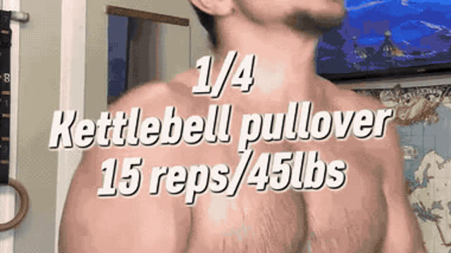
70GymClubbell & Kettlebell 30-Min Power
Mace Odyssey's 30-minute clubbell and kettlebell power circuit — rotational strength, swings and press patterns for full-body conditioning.
Open guide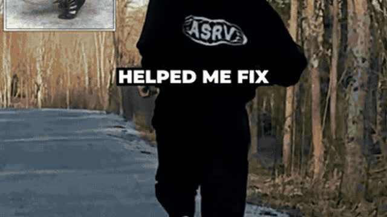
71MasteryMastery 1 · Legs & Knees
4 movements, no equipment, ~20 min. Foundation of the "Mastery in 20 Movements" series.
Open guide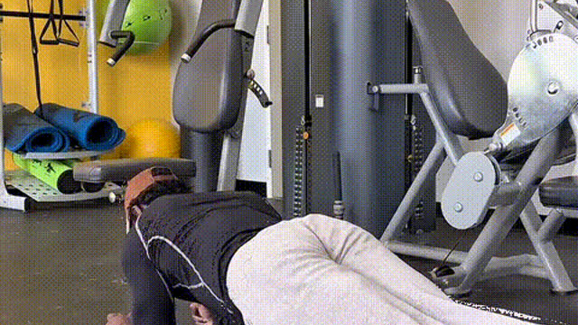
72MasteryMastery 2 · Core & Abs
4 movements, mat only, ~20 min. Mastery in 20 Movements — part two.
Open guideMastery 3 · Obliques & Rotation
4 movements, mat only, ~20 min. Mastery in 20 Movements — part three.
Open guide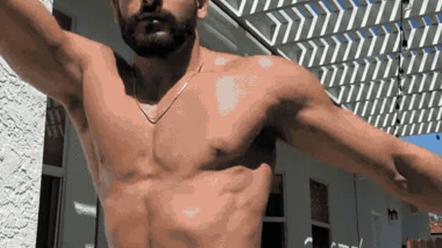
74MasteryMastery 4 · Shoulders & Spine
4 movements, no equipment, ~20 min. Mastery in 20 Movements — part four.
Open guide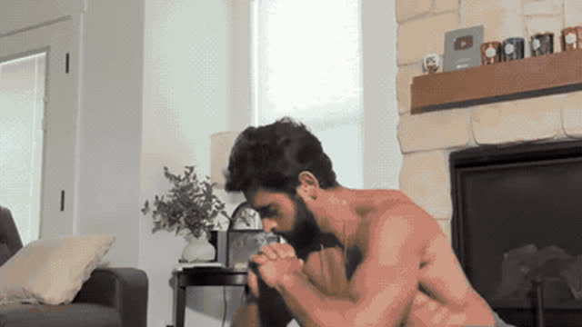
75MasteryMastery 5 · Hips & Balance
4 movements, no equipment, ~20 min. Mastery in 20 Movements — part five.
Open guide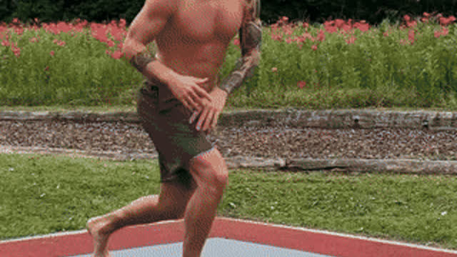
76MobilityRebuild Mobility From Zero — 4 Exercises
Lunge-to-fold, hip-lift toe taps, prone arch ↔ forearm plank flow, kneeling diagonal stretch — the 4 moves to restart full mobility from nothing. From @leo.moves.
Open guide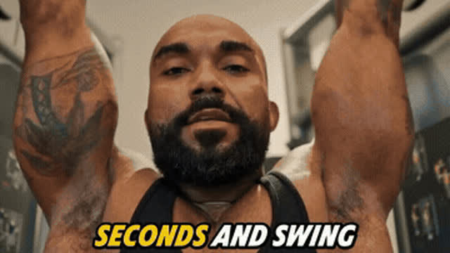
77MobilityMorning Mobility Reset — 14 Moves
One morning flow from 5 coaches: dead hang, deep squat, couch stretch, 90/90 switches, APT reset (reverse lean · half-camel · tabletop lift · psoas rock · hamstring fold), golf hip CARs (standing · quadruped · seated), big-toe drive, kettlebell halos. ~12 min.
Open guideMy lower belly always sticks out and crunches arent helping
My lower belly always sticks out and crunches aren't helping. What should I do? Ditch the crunches. I'm gonna show you the core workouts that actually work. Let's go flatten that belly. Another 10-minute core reset to as many rounds as you can. Dead bugs, 12 reps each side. Glute bridge marches, 20 reps each side. This will burn. Third movement, hollow hold, 30 seconds. It's a new exercise. This w
Open guideNeck/Trapezius Tension Release Trick
Viral self-care trick for neck/shoulder (trapezius) tightness:
Open guideNervous System Reset — 5-Step Somatic Release
Free the gut, release glutes, open armpits, expose throat, wake hands & feet. A ~60 second down-regulation routine from @shrednoir.
Open guideFix Your Prawn Posture — 4 Mobility Tests
Diagnose why sitting upright hurts: seated good morning, deep squat, cobra, superman — with fixes. From Dr. Andrew Harkin.
Open guidePre-Gym Mobility Warm-Up — 3 Moves (Spine · Mid-Back · Lower Back)
A 3-move pre-gym warm-up in the reel's own order: hanging decompression with a twist, a seated cross-arm side bend for the mid-back, then a supine knee drop that unlocks the lower back.
Open guidePrison Burpee Routine — Full-Body Burn
Assalamualaikum warahmatullahi wabarakatuh. I'm about to send ya through federal prison, burper routine. And ya'll know in federal prisons, a lot of killings, a lot of stabbings, a lot of things going on. So you got to keep your cardiovascular up to par. And this is what we used to do for shoulder. I'm going to send you through the first set. It's five, five times. So you're going to do Tyson's as
Open guideQuadratus Lumborum — Release & Rebuild
8 moves for one-sided low back pain: release the QL (table side-bend dip, seated straddle side bend, windshield wipers, cross-leg side drop), then build anti-side-bend strength (side plank, bird dog, glute-medius table lift, towel knee-lift). From @theanatomyoftherapy.
Open guideRebuild Tolerance After Injury — Gradual Return to Movement
After injury, twisting can be scary — so we stop moving. But a full recovery isn't about avoiding certain movements forever: it's about rebuilding tolerance gradually. Start stable (side plank → plank), then add load, then train in 3 dimensions, and finally express full power — so you can do the things you love and take care of your family.
Open guideRestore Supination — Paper-Towel Foot Drill
Walk on the inside of your foot? Don't force yourself to the outside — that makes it worse. The collapsing foot is the body's strategy to get a position it's missing. The foot needs both pronation (arch lowers) and supination (arch rises + leg externally rotates). To restore supination, set the foot up AND turn the hips into the side — the drill: paper towels (or wedges) under the inside of the he
Open guideReverse Lunge to Overhead Press — Single Movement Finisher
One exercise, full body: drive through a backward lunge and press overhead on the way up. 5 reps right, 5 reps left, rest 20–30 seconds, repeat for rounds.
Open guideTrain Your RIB CAGE + ABS — Band & Medicine Ball
A quick rib-cage + abs session with a resistance band and a medicine ball. 5 short moves: kneeling band work, medicine-ball planks (deep abs + serratus), side-lying cross-body connection, and seated wide-narrow band work for the intercostals. Use a band + 10 lb medicine ball; no talking, follow the on-screen cues.
Open guideFloor Calisthenics — Push & Hollow Hold
Ryo Oya's floor calisthenics pair: strict pushing variations with hollow-body hold work — calisthenics strength with trunk tension.
Open guideSeated 90/90 pigeon hip-rotation drill
A seated **90/90 "pigeon" hip-rotation drill with a lateral side-compression + hip-drive-stand**: coil the torso down over one side (compressing that flank), then drive the toes into the floor to stand the hips tall and open the whole side back up. Repeat for reps, then swap sides. Run it as a warm-up, or hold the end positions for time as a stretch.
Open guideSeiza Foot Check + Hip Stretch — Open the Foot & Ankle
Check your Seiza position first: your feet should sit open (toes in, heels away) — not straight north–south. If the foot/ankle (especially the outer ankle) is locked so you can't sit properly, use this hip stretch to open the area: foot/ankle/shin sealed to the ground, hips back, head forward, rotating toward the front knee.
Open guideShoulder-Savers — Warm Up Before Every Lift
The reason you fucking idiots have crunchy-ass, painful shoulders during your workouts is because you get into the gym and you go straight to your lifts. And you don't do these super simple and quick things to prevent shoulder pain. First, grab a wooden bar or any kind of bar and do 10 reps of shoulder dislocates. Full range of motion. Next, we're gonna do this on each arm, making sure not to stay
Open guideSimple Gains — Minimalist No-Fluff Workout
Alrighty, you want to make gains and you don't got time for all that extra stuff, long elaborate workouts, burpees, box jumps, and balance balls. You just want to not mess around and pack on some real muscle, stick to what works. Smash tons of overhead barbell press. This is what creates the wide flat base of that upside down triangle that's going to be your upper body physique. It's going to buil
Open guideSingle Kettlebell Room Shred
WhatKaidoes' single-kettlebell room shred — three KB movements, minimal space, high density. Hotel-room or home friendly conditioning.
Open guideSolo Core & Plank Routine — 5 Bodyweight Moves
5 bodyweight moves on a mat — hold the tuck and planks for time, keep V-ups and crunches slow and controlled. From Guy's own session footage.
Open guideFoot Shape & Arch Strength — 4 Exercises
Squat University's foot-shape assessment and arch-strength drills: short foot, toe splay, arch doming and calf work to fix flat/collapsed feet at the source.
Open guide** The angel workout
Minimum equipment (one kettlebell), maximum carryover: halo is a full-body rotational drill you can do in a living room (bright space, hardwood floors, no gym needed). Pair with a hip-mobility routine for a complete morning reset.
Open guideThe "Japanese Towel Method" — Posture & Waist (R2-D4
🎬 **Reel Digest: The "Japanese Towel Method" — Posture & Waist (R2-D4)** (`DcuC86px8pu`)
Open guideTo stretch every muscle
How to stretch every muscle. Press the top side of your toes into the floor. Place your foot against the wall and lean forward. Back foot flat, bend your leg. Sit with both knees bent and lean back. Place your knee and shin against the wall. Raise your torso up, lunge forward. Raise the arm up and away. Bend down while keeping both legs and back straight. Extend your legs straight to the side and
Open guideTrain the Transverse Abdominis (TVA) With Breath
If you look lean but still "bloated," the fix isn't more crunches — it's the transverse abdominis (TVA), the deepest core muscle that wraps your midsection. It's a *breathing* muscle, so the best way to train it is **dynamically, paired with your breath** — not static stomach vacuums.
Open guideTrain Your Hips Hard — 6-Move Mobility Challenge
Quadruped frog, tall kneeling lean & rotation, seated 90-90, half-kneeling lunges, deep squat hold — 1 min each, 3 rounds, 21 days. From @mr.highlevel_.
Open guideTrain Your Shoulders With Only 2 Dumbbells
Full shoulder day from just a pair of dumbbells: hit the front, side, and rear delts with variations of raises and press — seated/standing, single-arm/connected, and the key L-raise for the side delt done with control.
Open guideTrevor Shan — Morning Mobility & Thoracic Swing Flow
11-exercise full-body morning mobility and rotational swing protocol. From @trevorsinstinct.
Open guideTVA Dead Bug — Train Your Natural Corset
Crunches never touch the deepest ab layer — the transverse abdominis, your body's natural corset. One exercise and the 10-minute circuit that trains it.
Open guideRussian Calisthenics — Floor Mobility & Core
Vivona Flow's Russian-style floor work: mobility transitions woven with core tension drills — control through full range, not just holds.
Open guideWalking Gait & Toe Tucks — Foot/Ankle Realignment
Check your gait first: when the foot leaves the ground, does the heel turn IN toward the body (compression) or AWAY (healthy release)? If yours turns in, do the toe tucks daily to straighten the feet, restore toe mobility and open the ankles. Prop the knees if the stretch is too much.
Open guideYoga-Block Ab Kickouts — Home Six-Pack Move
A former fat guy's one kept-in-rotation home ab move: squeeze a yoga block between your feet and make your abs brace through every kickout. Tension over throwing your legs around.
Open guideYou do not have to live with knee pain
You do not have to live with knee pain. After having three ACL surgeries, my knees were in a ton of pain. And I couldn't do things like this with no pain and definitely not this with no pain. So what did I do? So one of the first things I started doing was backwards treadmill walks. As this exercise strengthens the muscles around your knees as well as brings blood flow through your knees. So it pr
Open guideYou look like this and not
You look like this and not this because you sit all day and don't train your glutes. Implementing these quick home workouts will pull your spine into place, improving your aesthetics and reducing lower back pain. Save and do these twice per week. Line hip abduction to start. Focus on squeezing your upper glute to raise your leg. Do three sets of 20 each leg. Next, do donkey kicks and fire hydrants
Open guideYou want to burn
You want to burn, stop burning, belly fat? Do it ease, and stop drinking protein shakes. You don't need that. You cause an inflammation in your body. Do it ease. At least for 30 seconds to 1 minute, especially if you're a beginner. Do it ease. Do it ease. Do it ease. You don't need to take any creatinine either. Every exercise. Do it for at least 30 seconds to 1 minute. Movement is medicine. Do it
Open guideYou want to get your abs?
You want to get your abs? Get rid of that stubborn belly fat? Do these for at least 30 seconds to one minute, especially if you want your abs to look like this when you're 60. Better do these for the rest of your life. You want these? Do these, man. At least for 30 seconds to one minute. Put your abs to look like that, especially when you're 60. You got to do these for now, man. Do these, especial
Open guideYoull never do setups again after doing these
You'll never do setups again after doing these. Let's get it...
Open guide** Your back isn't weak. It's compressed.
1. **Dead hang + leg swings — 30 sec** — hang from pull-up handles, swing legs to decompress the spine and release the lower back in real time. (Gym: Matrix cable crossover rack with pull-up handles.)
Open guide